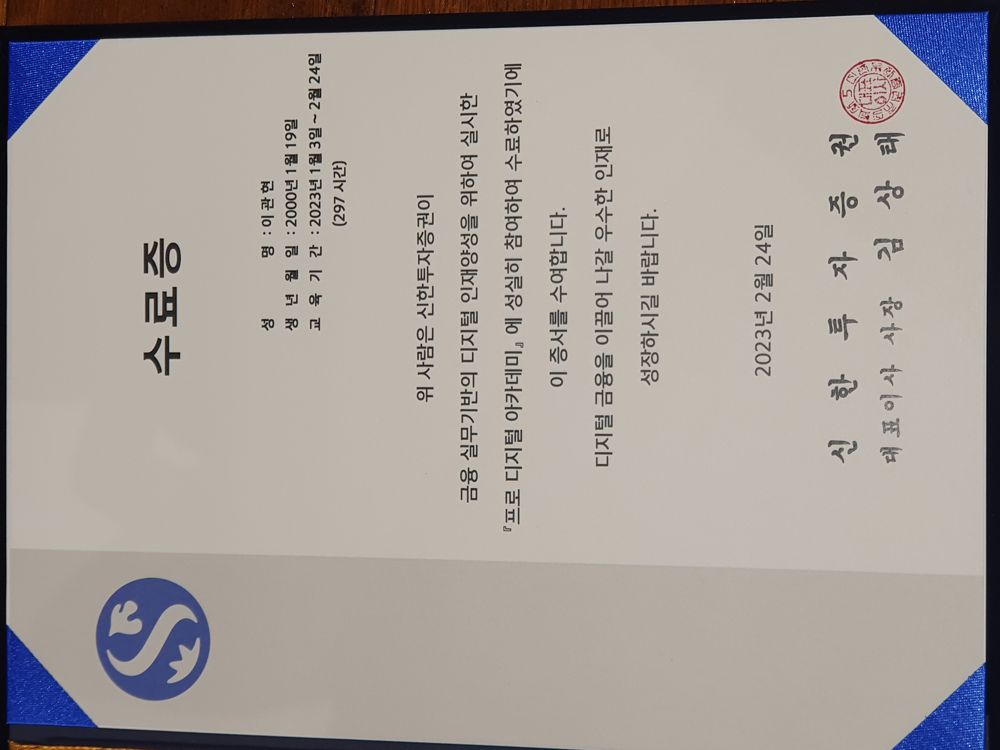

About Me
저는 단국대학교 소프트웨어학과 19학번 32192987 이관현입니다.
2021년 2월부터 9월까지 UNMISS(United Nations Mission in South Sudan)에서 해외파병을 다녀오면서 다양한 경험을 쌓았습니다.
현재는 Dankook Univ. 소프트웨어학과 재학 중이며, 경영과 소프트웨어를 결합한 DKU 경소톤에서 'Plantory'라는 반려식물 앱의 백엔드 개발로 우수상을 수상했습니다.
또한, 신한투자증권 프로 디지털 아카데미에서 교육을 받아 프로젝트를 수행하였고, 친환경 주식 마일리지 계좌 프로젝트의 백엔드를 Django를 사용하여 개발했습니다.
올해 목표는 자바 스프링에 대한 문법 공부를 마치면 스프링으로 된 프로젝트를 하나 해보는 것을 목표에 두고 있습니다.
현재는 단국대 멋쟁이사자처럼 11기 활동 중이며, 앞으로도 더 많은 경험과 기술을 습득하고 발전할 수 있는 기회를 찾고 있습니다.
Projects
- 🥉 DKU 경소톤(경영 + 소프트웨어 해커톤)에서 반려 식물 앱 "Plantory"(flutter, 우수상 수상)
- 🌲 친환경 주식 마일리지 계좌 프로젝트 백엔드 개발(Django)

|
 |